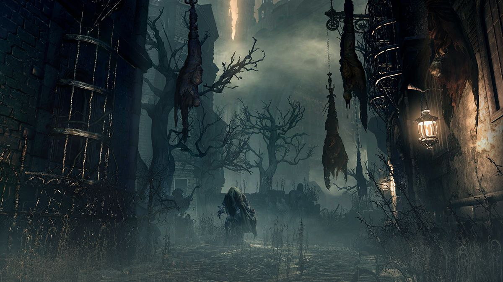

Capítulo 1
Hoje faz três dias desde que os quatro foram banidos de sua terra, está cada vez mais difícil, não só tem os desafios para enfrentar como também precisam achar algo para comer, estão cada vez mais fracos e impotentes, mas todos eles têm uma grande determinação para continuar e também uma enorme sede de vitória para poderem voltar aos seus lares…
-Rinorí: Você está pronto para amanhã Hiroki?
-Hiroki: Sim, já temos tudo que é necessário para amanhã finalmente chegou a hora.
Nesse exato momento, viram um sinal do primeiro desafio, uma ruína poucos metros apareceu em seus caminhos.

Seguiram rumo a ela e tinha 4 símbolos em seu portal, mas a ruína dava exatamente em um labirinto, onde seus sentidos seriam testados, Entraram e deram de cara com um livro aberto que dizia: “ Quatro caminhos, todos ao lado, um é bom o outro ruim não confie nos outros ou em ninguém seu maior inimigo pode ser você mesmo”.

-Hiroki: Quatro entradas, quatro pessoas
-Elinthy: E agora o que vamos fazer?
-Scarlett: Acho que não podemos nos separar.

-Rinorí: Eu vou testar a porta com símbolo da lua a que der certo, entramos todos

-Hiroki: Eu vou pela de Floco de gelo .

-Scarllet: Eu vou testar a da folha talvez possa ter algo nela.

-Elinthy: Tentarei a das chamas e veremos no que dá.
Cada um então testou um caminho diferente, Hiroki foi pelo caminho do floco de gelo mas quando ele tentou abrir a porta ela se desfaz em suas mãos, já Rinorí optou por testar o caminho com a porta do livro, porém quando ele tentou abrir a porta a mesma caiu em um abismo sem fim, Scarlett testou a porta com a folha entalhada mas quando tentou abri-la também não teve êxito sua porta sumiu do nada. Tudo parecia ir de mal a pior afinal nenhum deles havia conseguido achar o caminho certo eles começaram a perder a esperança quando de repente Elinthy grita.
Elinthy: Consegui, achei o caminho certo venham logo!
Elinthy testou a porta com símbolo das chamas então ela se abriu, lá dentro havia enormes paredes e um labirinto que não parecia ter fim cada um olhou pra um lado e começaram a andar quando eles menos esperavam, o chão começou a tremer,apareceram várias criaturas com suas formas confundindo-lhes a mente.
- Hiroki:Pessoal o que está acontecendo por aqui?
- Rinorí: Onde estão os verdadeiros?
-Scarlett: Eu sou a verdadeira acredite em mim
Mas as criaturas que tomaram forma de seus corpos repetiam as mesmas coisas que os verdadeiros. Então Hiroki teve a ideia de usar seu poder, ele pegou seu cetro e espalhou gelo por toda parte, pensando em quem fosse esperto se defenderia, assim que Rinorí percebeu seu movimento ele invocou um grande urso polar que ficou de guarda a sua frente, Elinthy empunhou sua espada e fez picadinho do gelo de Hiroki, Scarlett convocou um espírito da floresta que fez um casulo de árvore em volta de si.


Todas as criaturas a sua volta se dissiparam como poeira.
-Rinorí: Caramba Hiroki poderia ter avisado
-Elinthy: Bem pensado, admiro sua atitude
-Scarlett: Muito bom Hiroki!
-Hiroki: Essa foi por pouco, eu não tinha certeza se iria dar certo.
Continuaram o caminho, e mais a frente surgiu uma coluna separando Hiroki e Scarlett de um lado e Elinthy e Rinorí de outro, ambos começaram a chamar uns aos outros
De um lado Hiroki e Scarlet tentaram seguir em frente na esperança de encontrá-los no caminho, do outro Elinthy e Rinorí tentaram destruir o muro.
-Elinthy: É inútil, quanto mais tempo ficarmos aqui atacando mais tempo vamos perder, vamos seguir em frente talvez encontramos eles no caminho
-Rinorí: Sim.
Então assim todos eles seguiram pelo labirinto, até que Hiroki e Scarlett encontram Rinorí gravemente ferido no labirinto.
-Scarlett: Rinorí!
-Hiroki: Espere Scarlet pode ser mais um daquelas criaturas.
-Rinorí: Me ajudem… Por favor eu não quero morrer…
Nesse momento Hiroki lembra de seus passatempos com Rinorí.
-Hiroki: Pedra?
-Rinorí: O que??
-Hiroki: Pedra?
-Rinorí: Me ajude e pare com isso.
-Hiroki: PEDRA!?
-Scarlett: Hiroki o que é isso? Vamos ajudá-lo logo..
Hiroki enfia seu cetro no pescoço de Rinorí, ele morre revelando a criatura que estava se passando por Rinorí.
-Hiroki: Eu sabia
-Scarlett:O que foi tudo isso?
-Hiroki: Quando éramos crianças eu e Rinorí brincávamos de cavaleiros, e toda vez que alguém entrava no reino deveria dizer “Montanha” quando o outro dissesse “Pedra”, para assim nenhum intruso entrar em nosso reino.
-Scarlett: Você confiou em uma brincadeira para identificá-lo!? Não sei se fico surpreendida com sua lógica ou assustada pois se ele não lembrasse disso estaria morto.
-Hiroki: Se o conheço bem ele não morreria com essa facilidade mesmo mobilizado ele ainda conseguiria invocar alguma coisa
-Scarlett: Então vamos logo esse labirinto não vai terminar sozinho!
A situação de Rinorí e Elinthy também não era das melhores, deram voltas e mais voltas e nenhum caminho era o certo, então Rínorí se dispersou por um momento, e Elinthy estava empunhando uma espada contra ele.
-Rinorí: O que você está fazendo??
-Elinthy: Você pensou mesmo que eu acreditaria nessa sua encenação barata, você é o pior de todos aqui e você tem que concordar com isso, ninguém aqui gosta de você muito menos eu mais se eu te matar aqui e agora, eu posso achar uma forma de sair mais rápido daqui eliminando o mal do meu caminho.
-Rinorí: Como você pode me julgar desse jeito, voce é ridicula, voce acha mesmo que eu vou deixar você me matar, é uma estúpida.
Elinthy atacou Rinorí, golpeou pelo lado direito, mas Rinorí invocou um leão, que mordeu uma perna de Elinthy, ela urrou de dor, mas diferiu um soco na cara do leão, e o partiu ao meio com sua espada.
-Elinthy: Você é ingênuo Rinorí chega ser encantador, mas eu não tenho paciência!
Elinthy avançou com a espada e sua mira acertaria o coração de Rinorí. Mas…
-Elinthy: Rinoríii!
A verdadeira Elinthy apareceu e enfiou a espada no coração daquela criatura que era sua cópia.
-Rinorí: Você me assustou muito Elinthy!
-Elinthy: Me desculpa eu estava tentando achar uma saída,mas quando olhei você já não estava mais lá, eu fiquei te procurando e vi o que estava acontecendo, ainda bem que cheguei a tempo.
-Rinorí: Muito obrigado, melhor continuarmos nossa jornada.
Os dois seguiram rumo a uma parede que tinha tijolos meios soltos, então Elinthy deu um chute neles e saíram voando revelando a saída, do outro lado depois de dar tantas voltas Hiroki e Scarlett também aparecem, e assim todos passam o primeiro desafio, e conseguem sair da ruína,
Quando saíram da ruína, contaram sobre o que tinham acontecido com cada um, então seguiram rumo, ao resto da jornada.
Capitulo 2
Tempo se passou após a primeira jornada dos exilados, até que. Chegaram em um vilarejo abandonado, todo queimado pelo fogo com resto mortais.

-Scarlett: Eu consigo sentir suas almas gritando, agonia e dor é tudo que eu sinto o que aconteceu aqui?
-Elinthy: Guerra, veja os sinais, as pisadas vieram do norte, olhe as casas queimaram e colocaram o povo reunido, as pegadas de sangue, mataram a maioria ali.
-Hiroki: Não é atoa que que Miratry é conhecido como Vale das Almas mortas.
-Rinorí: Isso foi literalmente um massacre, olha isso são brinquedos, haviam crianças aqui!
No meio de toda essa tensão. Scarlett começou a chorar, a pressão era tão grande que a fez desmaiar.
-Hiroki: SCARLETT! Por favor acorde, não desmaie agora!
A terra começou a rachar, e dividiu o vilarejo ao meio por uma faixa preta brilhante vindo de dentro do solo
-Elinthy: Vamos para aquela casa, eu vou carregar Scarlett, vão agora!
-Rinorí: Vamos pessoal não podemos perder tempo.
Todos entraram em uma casa que não estava tão queimada no vilarejo, Elinthy deitou Scarlett na cama, e Hiroki disse:
-Hiroki: Vamos montar uma barricada na porta, caso algo tente passar podemos ganhar tempo, pra fazer algo.
-Rinorí: Tem razão, tranque todas as janelas também
Rinorí invocou uma beast-leostrix, para que guardasse a frente da casa, pelo lado de fora, pois seus poderes já estavam bem drenados, pegaram todos os móveis que tinha na casa e montaram uma barricada na porta, trancaram as janelas, so ouviam o vento rugindo forte, causando preocupação em todos,
Scarlett ainda desmaiada em uma cama pequena, Elinthy, Rinorí e Hiroki aguardavam o retorno do bestiário, andando de um lado para o outro.
-Hiroki: Eu nao sei mais o que podemos fazer já estamos aqui a dias nesse vale e qual o propósito? nao consigo entender
“Dentro de sua mente ele sentia uma raiva crescendo por não saber o que fazer para ajudar seus companheiros tão pouco a si mesmo, via Scarlett desmaiada naquela cama pequena e sentiu vontade de beijá-la, mas o que os outros diriam, parou para analisar um momento o que estava acontecendo em sua volta, olhou para Elinthy os círculos dos olhos dela estavam bem fundos ela passava noites acordadas patrulhando, para ver se encontrava alguma ameaça, quando eles saíssem dali ele teria que agradecê-la por manter todos a salvo.
Rinorí seu amigo de muito tempo, olhava para Elinthy e para janela lá fora preocupado com o retorno de sua beast, parecia estar exausto e preocupado com sua magia drenada, e que levaria o esforço de cada um de seus companheiros, fazendo de tudo para ajudá-los.”
- Rinorí: Eu nunca imaginei que seria tão difícil assim passar por isso tudo, mas vamos conseguir é só não perdermos o foco tudo vai se ajustar.
“Rinorí nao aguentava mais, aquilo que a falsa Elinthy disse o afetará mais que o necessário, mais ele sabia que aquelas palavras não eram reais e que Elinthy não fazia ideia de que aquilo havia ocorrido, ele olhava pro seu rosto e via uma mulher exausta, mas mesmo assim muito linda ele faria de tudo para lutar por ela, o outro lado da sala seu amigo.
Hiroki estava bem abatido, mas duvidava que ele cairia em cima de Scarlett a qualquer momento, mais o conhecendo bem ele seguraria a onda, sua coruja ainda não havia voltado, começava a se preocupar com que estava prestes a vir, apesar de tudo daria sua vida aos seus companheiros, pois depois de uma longa jornada estava aprendendo a criara afeto com aquelas três pessoas que se conheceram por um infeliz acaso.”
-Elinthy: Vamos nos preparar pessoal, vamos permanecer juntos até o último de nós cair.
“Cansada essa era a melhor palavra que definia Elinthy, estava completamente exausta, horas acordada de madrugada vigiando se algo os atacaria a noite, por ser mais velha sabia que carregava um peso a mais, que ela se
achasse mais que os outros pois de um tempo pra cá não conseguia se sentir bem de forma alguma, andava mais estressada que o habitual, mas depois de tanto sofrimento que passou em sua vida ali estava três vidas com as quais ela aprendera a lidar, Rinorí havia ficado muito assustado após a Ruína, mas ele não quis comentar sobre o assunto sabia que ele estava com raiva, e sabia que havia algo a mais em relação aos sentimentos dele.
Hiroki fingia estar despreocupado mas ela sabia que não, pois ele gostava de usar uma máscara de durão, e Scarlett ainda continuava desmaiada para piorar a situação, todos estavam horríveis mais o pior ainda estaria por vir. A beast de Rinorí voltou, muito assustada e sem uma perna, ele bateu seu cajado nela e ela se dissipou, ao mesmo tempo Scarllet urrou de dor na cama se contorcendo mas mesmo assim, ainda desacordada.”
Scarlett se deixou levar de mais, ela escutava as almas gritando e chorando naquela vila que perdeu completamente a noção do que fazer, e deixou que as almas e a terra devorarem sua alma, ali caída no chão ela viu a cena do que havia acontecendo, morte, cinzas, dor, ódio gélido, uma força de onde não sabia vim, os soldados corriam, não, não eram soldados, eram criaturas piores do que haviam encontrado na Ruína, e em meio a tanto desespero ela viu uma criança agachada em baixo de alguns escombros seu rosto era de puro terror, ela não deveria falar com nenhuma daquelas almas, mas então correu até aquela criança, era uma linda menina, de olhos verdes cabelos castanhos enrolados, Scarlett a pegou e disse:
-Scarlett: Oi menina não tenha medo, por favor me diga o que há de errado
-Menina: Vai embora moça foge em quando dá tempo ele está aqui, ele mal, matou meus pais enquanto eu fugia ele vai vim me buscar, eu estou com medo, moça me mate antes que ele me faça sofrer, por favor, liberte a minha alma eu não quero sofrer.
-Scarlett: Eu não posso te matar por favor não me peça isso.
-Menina: Há algumas coisas moça que não tem que ser entendidas, apenas faça e poupe minha alma.
A menina pegou uma adaga que carregava, e pôs na mão de Scarlett, pegou seu ursinho de pelúcia o segurou forte e disse:
-Menina: Adeus, Rubyt, mamãe, papai, esperem por mim.
Scarlett estava entre soluços mal conseguia proferir qualquer palavra, mas ela se esforçou e perguntou qua.. qual seu nome?
-Menina: Dana moça, meu nome é Dana. A menina disse com os olhos escorrendo lágrimas,
-Scarlett: Descanse em paz Dana, sempre me lembrarei de você.
Então Scarlett perfurou o coração da garota, com a adaga que ela dera, em seguida caiu de joelhos gritando e chorando, segurando a adaga firme em suas mãos.
Já fazia uns vinte minutos que Scarlett se contorcia na cama Hiroki desesperado gritava seu nome a sacudindo, mais ela não acordava, Rinorí tentava acalmar Hiroki dizendo:
-Rinorí: Calma Hiroki, ela deve estar em transe por conta de onde estamos, ela disse que estava sentindo as almas deste lugar ela vai voltar pra gente, precisamos estar calmos e tomar conta dela agora.
Elinthy que estava ao pé da cama segurando as pernas de Scarlett disse:
-Elinthy: Ele tem razão Hiroki não se desespere vamos fazer de tudo pra manter ela bem, Rinorí olhe a janela.
Scarlett continuava lá caída, aquele solo se tornando negro, até que uma presença maligna apareceu entre, uma névoa de cinzas e disse:
-Voz: Ora, ora, ora o que temos uma aqui, uma linda jovem, ou devo dizer Scarlett.
Aquela voz era maligna, Scarlett não fazia a menor ideia do que estava acontecendo, então perguntou:
-Scarlett: Como você sabe o meu nome? qu...quem é você?
Aquela figura olhou para Scarlett e disse:
-Voz: Eu sou Magnus Nightshade, aquele que lançou a profecia em você e seus companheiros, quem diria que pobres mortais como vocês seriam atingidos tão facilmente, com seus corações tolos..
-Scarlett: Do que você está falando? Quer dizer que você foi o culpado de tudo isso, qual seu problema com a gente?
-Magnus: Eu tenho todos os problemas, e tenho meus motivos, ouça bem criança pois eu vou te contar uma história, Há muito tempo atrás meu Reino Fall, era conhecido por ser o reino onde havia o conhecimento de todo o mundo.
E os magos de meu reino possuíam domínio elemental, exceto por mim, pois eu domino vento, raio, necromancia, toda magia elemental e magia temporal, eu quis usurpar o trono de meu reino mais me baniram, por sorte encontrei meu "animalzinho de estimação", e viajo pelo mundo
usurpando todos os tronos, mas um horrível dia quando cheguei nesse vilarejo, um sábio velho me disse que quatro pessoas de um certo lugar perto desta terra me derrotaria, então lancei uma profecia para aqueles mais fortes que nasceriam em cada vila aos arredores e felizmente foram vocês os meus peões, eu estava esperando por vocês, o último desafio é isso que os aguarda, melhor avisar os seus companheiros, ou eu lhe ofereço algo melhor se torne minha rainha e seus amigos meus súditos, faço maravilhas com os poderes de vocês em troca não os mato, pense Scarlett.
Magnus segurou Scarlett pelo pescoço e a mostrou, saindo pelo mundo ao lado de Magnus, matando inocentes por puro prazer seus amigos saqueando e matando reino após reino, ela viu como seriam se falhasse em sua última jornada, seriam completamente malignos assim como Magnus, sua cabeça começou a latejar ela sentia que morreria ali,
mas não podia abandonar seus amigos tinha que voltar e contar a eles, então ela disse:
-Scarlett: Nunca vamos aliar a você. então ela cuspiu em seu rosto, seu nariz sangrava e sua cabeça latejava mas então ela ouviu seu nome de longe, alguém rugindo seu nome do outro lado de sua alma, Hiroki a chamava, e ela iria até eles. Então Dana estava perto dela segurou sua mão e disse:
-Dana: Isso é por ter salvo minha vida volte para seus amigos. A menina apertou sua mão, ela estava voltando para a consciência.
Hiroki perdeu a cabeça quando viu o sangue escorrer do nariz de Scarlett, gritou mais do que tudo tomou-a em seu colo e ela chorou e chorou, e ficou ali durante um bom tempo sem dizer uma palavra, até que tomou coragem e começou a falar, disse que Elinthy estava certa sobre a
guerra, contou sobre o ocorrido com Dana, e falou sobre Magnus a profecia e a visão horrível que ele dera a ela, todos permaneceram calados, cada um com um peso em suas costas, pensando em tudo que Scarlett havia dito.
-Hiroki: Faz muito sentido e realmente é muito difícil digerir isso tudo, mas se nós fomos escolhidos tem algum motivo, passamos anos achando que não éramos bons, ignorantes a essa profecia, mas agora sabemos o motivo e aprendemos muitos em nossa jornada até aqui,
-Elinthy: Sim e de fato ele tem medo se não, não teria dado a oferta de nos aliarmos a ele, e te dando essa visão, acho que ele está com medo de nós.
-Rinorí: Nós vamos conseguir pessoal, vamos vencer ele e não só voltarmos para casa mas também salvar o mundo.
-Scarlett: Vamos dar o que ele merece, vamos jogar sujo com eles, e mostrar o quanto somos realmente maus quando o matarmos.
Todos olharam entre si com um sorriso malicioso no rosto, Elinthy levantou sua espada e disse:
-Elinthy: A amizade, que até aqui nos fez fortes!
Rinorí levantou seu cajado e disse:
-Rinorí: A amizade, que até aqui nos fez fortes!
E dessa forma Hiroki levantou seu cetro e Scarlett sua lança e disseram as mesmas palavras, então uma pontada de esperança e coragem brilharam em seus olhos, lá fora o vento não rugia mais estava num profundo silêncio, Hiroki achou estranho aquele silêncio, então pegou seu cetro e fez sair um floco de neve brilhante e o deu para Scarlett, uma promessa silenciosa.
-Hiroki: Vamos ver o que há de errado, preparem-se para qualquer coisa.
Cada um com armas em mão, tiraram a barricada e abriram a porta, e lá estava quatro criaturas com corpos esguios e pele encouraçada, eram horríveis e muito deformados, ficavam fazendo um barulho muito estranho
-Hiroki: Vocês não se banharão em sangue de nem um de nós pois iremos matar todos os que ficarem e nosso caminho.
A criatura soltou um grunhido estridente que chegava a sangrar os ouvidos, então as quatro criaturas avançaram, aquela que tinha gritado foi para cima de Hiroki projetou garras para fora e o atacou, mas ele bloqueou o golpe com seu cetro, a criatura avançou por outro lado, Hiroki se esquivou e lançou seu poder sobre a criatura, gelo se espalhou pelos lados, mas a criatura era mais rápida e já estava às costas de Hiroki as garras se projetaram e
arranharam o braço de Hiroki mas assim q as unhas encostaram na pele ele lançou seu poder e a criatura virou gelo e com o último golpe de seu cetro partiu a criatura congelada em vários pedaços, do outro lado Scarlett usava as plantas para fazer um casulo em volta de uma outra criatura, mas a criatura quebrou o casulo com suas unhas e atacou Scarlett, deixando um arranhão em sua bochecha ela golpeou um lado da criatura, jorrando sangue negro a criatura atacou novamente e as plantas surgiram prendendo suas mãos e Scarlett perfurou seu coração com a lança, Rinorí estava com a criatura mais alta, ele golpeava a criatura de cada lado enquanto a criatura se defendia, ele invocou uma pantera, e minutos depois a criatura já estava cansada de lutar contra os dois, Rinorí se aproximou e a criatura deu um golpe em sua perna, ele caiu no chão e sua mente estava girando, mas sua pantera aproveitou da
da distração para pular em cima da criatura e mordê-la toda, Elinthy pegou a criatura mais rápida, ela foi pra cima da criatura que se esquivou com facilidade de seus golpes, com espadas em mão tentou cortar um braço da criatura, mas a criatura deu uma rasteira em Elinthy e as duas rolaram no chão, ficando a criatura por cima agarrou um braço de Elinthy o perfurando, sangue começou a escorrer, mas ela travou a criatura, e empunhou sua espada no crânio da criatura, Elinthy se levantou e a partiu ao meio.
Todas as criaturas mortas, elas foram mandadas para matá-los, e eles já sabiam quem tinha dado a ordem.
-Scarlett: Temos que prosseguir, não podemos ficar aqui por muito tempo.
-Elinthy: Scarlet tem razão, é melhor irmos, mais algumas batalhas dessas e estaremos acabados para o fim se estivermos cansados ele nos vencerá facilmente.
Pegaram um caminho rumo ao fim do vilarejo, e saíram dali o mais rápido que conseguiram estavam todos exaustos mas não iriam desistir tão perto, depois de terem conhecido a verdade lutariam até o final.